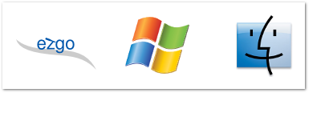

<h1 class="title">認識ezgo</h1>
<div class="main">
    <div class="content">
	<ul>
	    <li>ezgo 跟 Windows 還有蘋果電腦的 Mac OS 一樣都是屬於電腦作業系統。</li>	    
	    <li>不同的是，ezgo 是以教育和公益為出發的電腦作業系統，ezgo 收錄的軟體都是採用公共版權的授權方式，讓所有人可以自由而免費的使用，
並且可以任意的複製與分享。</li>	    
	</ul>
    </div>
</div>

	
	
